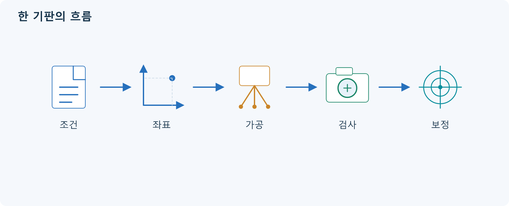
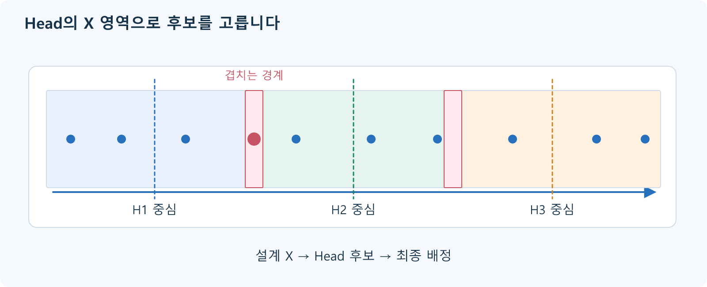
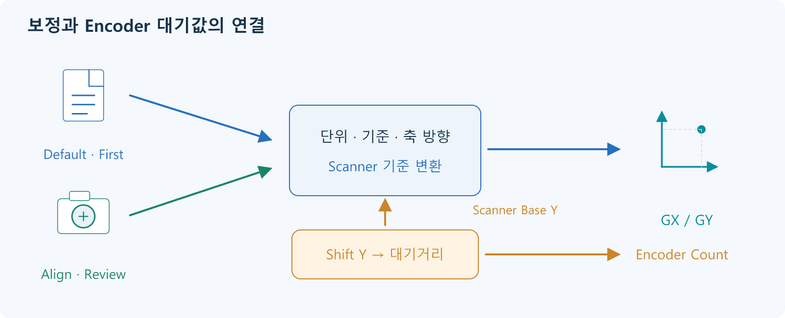
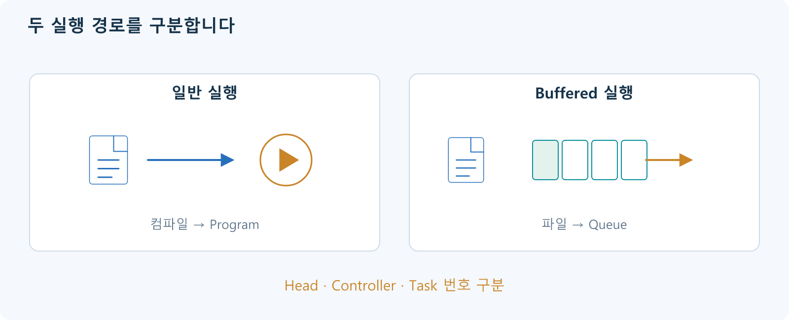
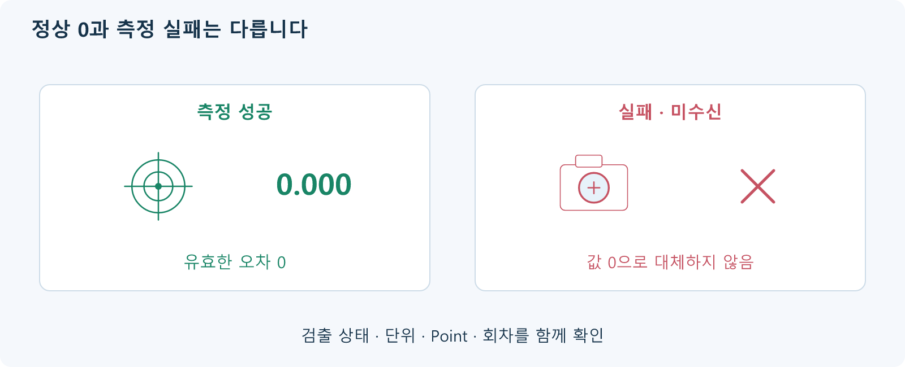
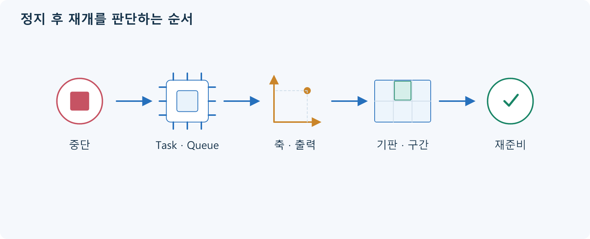
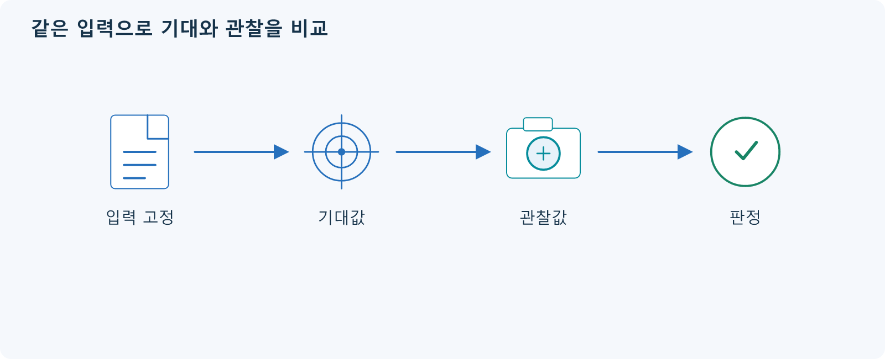
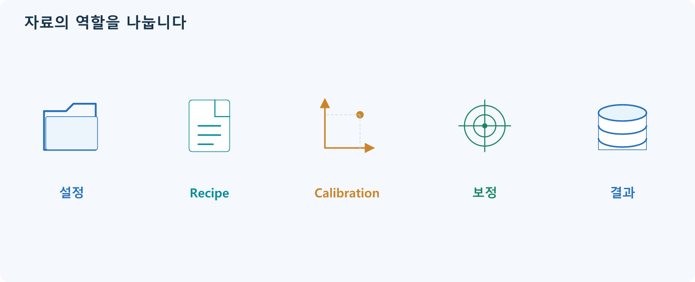

2) PROCESS SW 개발
이 문서는 가공 조건이 좌표와 장치 동작으로 바뀌고, 검사 결과가 다음 가공의 보정으로 이어지는 과정을 설명한다. 처음에는 기판 한 장의 흐름을 따라 읽고, 개발·문제 대응 때는 해당 기능의 입력값과 상태·저장 결과를 연결해 본다.
프로그램이 연결하는 전체 흐름
Recipe는 무엇을 어디에 가공할지 정한다. 프로그램은 장비 설정과 보정을 합쳐 실행 조건을 준비하고, Stage·Scanner·Laser·Vision의 요청과 결과를 연결한다. 조건 저장, 장치 동작 완료, 검사 판정과 보정 저장은 서로 다른 단계다.

처음 읽는 순서
기판·Cell·Head·Shot의 뜻을 먼저 익힌 뒤 프로그램 구조와 실행 조건을 읽는다. 그다음 좌표·MOF·검사·보정의 관계를 살펴보고 장치 통신과 운전 화면으로 연결하면 각 값이 어디서 만들어지는지 이해하기 쉽다.
기본 구조
01. 프로그램 한눈에 보기 · 02. 장비 역할과 공정 흐름 · 03. 프로그램 구조와 실행 데이터 · 04. 실행 준비와 설정 관리
조건·좌표·실행·보정
05. Recipe·PPID·운전 조건 · 06. 좌표 변환과 Head 분담 · 07. Scanner·MOF 실행 · 08. Align·Review·검사·보정
장치와 운전 상태
09. 통신과 장비 인터페이스 · 10. 광학 장치와 Power 측정 · 11. 운전 화면과 Manual·Auto · 12. Alarm·Interlock·Stop·Reset
개발·문제 대응
13. 개발 시험과 결과 확인 · 14. 현재 기능과 개발 확인사항 · 15. 증상별 개발 확인 · 16. 데이터 관리와 변경 반영
문제 상황에서 시작할 페이지
같은 기판과 실행 회차의 자료를 비교한다. 화면에 보이는 편집값, 이미 준비한 실행값, 장치의 실제값과 검사 결과가 서로 다른 시점의 값일 수 있다.
| 상황 | 먼저 연결할 내용 |
|---|---|
| 저장값과 실행값이 다름 | Recipe 선택·실행 사본·변경 반영 |
| 가공 위치·시점이 다름 | 좌표 기준·Head 배정·Encoder |
| 검사 NG·보정 누적이 이상함 | 측정 상태·단위·적용 범위·보정본 |
| 장치 대기·정지 후 재개 문제 | 통신 상태·실제 정지·미완료 작업 |
이 페이지 폴더의 PNG를 해당 페이지에 첨부한 뒤 아래 소스를 붙여넣으세요.
01. 프로그램 한눈에 보기
Process SW는 기판 한 장에 사용할 조건을 정하고, 가공 위치를 계산해 장치에 전달한 뒤, 검사 결과와 보정값을 다음 작업에 연결한다. 처음에는 화면 이름보다 기판·Cell·Shot·Beam·Head가 각각 무엇인지 구분하는 것이 중요하다.
기판에서 가공점까지
기판은 장비에 투입되는 한 장의 작업물이다. 그 안에는 제품의 반복 단위인 Cell이 배치되고, Cell마다 가공할 위치와 패턴이 정해진다. Recipe는 이 배치와 가공 조건을 담는다.
Shot은 한 번의 가공 동작이다. DOE를 사용하는 조건에서는 한 Shot의 빛이 여러 Beam으로 분기되어 여러 위치를 함께 가공할 수 있다. 따라서 Cell 수, Shot 수, 실제 Beam 가공 위치 수는 같은 숫자가 아니다.

Head는 실행 장치, Point는 추적 대상
Head는 담당 영역의 Scanner와 가공 조건을 묶어 다루는 장치 단위다. Scanner가 빛의 위치를 바꾸고 Laser가 가공 에너지를 공급한다. 어느 Cell의 어느 Shot을 어느 Head가 담당하는지는 좌표 계획에서 결정한다.
검사와 이력을 연결할 때는 Head·Cell·Shot·Beam과 Point 식별자를 함께 본다. 화면에서 같은 위치처럼 보여도 Beam이나 작업 회차가 다르면 다른 결과일 수 있다. Point ID는 이 대상을 구분하는 이름이며 좌표값이나 카메라 자체를 뜻하지 않는다.

작업 한 건을 설명하는 순서
한 작업을 확인할 때는 먼저 기판 ID와 Recipe를 맞추고, 사용 Cell·Head와 준비된 가공점을 확인한다. 그 다음 장치 실행 상태, 검사 결과, 보정 저장 상태를 순서대로 연결한다. 가공이 끝났다는 사실만으로 검사 합격이나 보정 저장까지 끝난 것은 아니다.
| 구분 | 무엇을 나타내는가 |
|---|---|
| Recipe | 제품 배치와 가공 조건 |
| 실행 사본 | 이번 기판을 위해 준비한 조건·좌표·실행 대상 |
| 검사 결과 | 어느 점을 측정했고 어떤 값과 판정이 나왔는지 |
| 보정본 | 유효한 결과로 계산해 저장한 다음 준비의 입력값 |
함께 읽기
02. 장비 역할과 공정 흐름 · 05. Recipe·PPID·운전 조건 · 06. 좌표 변환과 Head 분담 · 08. Align·Review·검사·보정
이 페이지 폴더의 PNG를 해당 페이지에 첨부한 뒤 아래 소스를 붙여넣으세요.
02. 장비 역할과 공정 흐름
Stage는 기판을 옮기고 Scanner·Laser는 가공하며 Vision은 기준점과 결과를 측정한다. Process SW는 이 장치들의 조건과 요청·상태·결과를 연결한다. 기판이 움직이는 물류와 프로그램이 명령을 주고받는 순서를 함께 이해해야 대기 원인을 찾을 수 있다.
기판을 중심으로 장치 역할 보기
Stage의 위치와 이동 상태는 가공과 측정의 기준이 된다. Scanner는 담당 영역의 가공 위치를 만들고, Laser는 정해진 조건으로 빛을 공급한다. Vision은 계획한 기준점이나 가공점을 촬영해 측정값과 판정을 반환한다.
아래 그림은 역할을 보여주는 개념도다. 화살표의 방향을 실제 장비의 고정 물류 방향이나 설치 거리로 읽지 않는다. 실제 이동은 선택한 운전 경로와 장치 요청·완료 상태를 기준으로 판단한다.

| 대상 | 담당 역할 | 주로 확인할 상태 |
|---|---|---|
| PLC·Stage | 기판 이동과 설비 요청·완료 신호 | 실제 위치, Ready, 이동·Handshake 상태 |
| Automation1·Scanner | Head별 가공 프로그램과 축 동작 | 실행 대상, Task, 준비·완료 상태 |
| Laser·광학 장치 | 가공 출력과 광학 조건 | 출력 조건, 장치 상태, 동작 허가 |
| Vision·Review | 촬영·측정·판정 | 요청 대상, 수신 결과, 결과 저장 상태 |
준비 요청과 가공 요청은 다르다
준비 단계에서는 사용할 Recipe를 바탕으로 장비 설정과 보정을 합성하고, 좌표와 Head별 실행 파일을 만든다. 준비된 대상이 있어야 가공 요청에서 그 대상을 실행할 수 있다. 파일이 만들어졌거나 전송이 끝났다는 사실은 가공 완료를 의미하지 않는다.
실행 요청 이후에도 장치가 실제로 준비되었는지, 해당 회차의 작업이 끝났는지 확인해야 한다. 명령을 보낸 상태, Busy 상태, Complete 상태를 같은 뜻으로 사용하면 어느 장치에서 기다리는지 알기 어렵다.
자동과 수동 조건을 비교할 때
현재 자동 준비 경로는 Shift X/Y를 0으로 정리한다. 수동 MOF에서 입력한 Shift가 자동 운전에도 그대로 이어진다고 가정하면 좌표 차이를 잘못 해석하게 된다. 비교할 때는 동일한 Recipe 이름뿐 아니라 운전 경로와 이번에 준비한 실행값을 맞춘다.
작업이 대기하면 현재 Step과 기다리는 상대 신호를 먼저 본다. 이전 기판의 완료 신호가 남았는지, 활성 Head와 실제 실행 대상이 맞는지, 요청 회차가 일치하는지를 확인한 뒤 통신과 장치 상태로 범위를 좁힌다.
함께 읽기
03. 프로그램 구조와 실행 데이터 · 07. Scanner·MOF 실행 · 09. 통신과 장비 인터페이스 · 12. Alarm·Interlock·Stop·Reset
이 페이지 폴더의 PNG를 해당 페이지에 첨부한 뒤 아래 소스를 붙여넣으세요.
03. 프로그램 구조와 실행 데이터
화면은 조작과 표시를 맡고 Manager는 조건과 상태를 관리하며 Station은 준비·실행 순서를 연결한다. 같은 장치와 데이터를 여러 화면이 공유하므로 값이 어디에서 만들어지고 언제 실행 사본으로 고정되는지를 알아야 수정의 영향을 판단할 수 있다.
시작 시 객체가 연결되는 방식
시작부는 설정 위치를 결정하고 Recipe·Setting·Product·Review 결과·보정·실행 파일을 다루는 저장 객체를 만든다. 이 객체들을 CManager에 전달하고, 같은 Manager가 가진 Station·Interface·Motion·Review 등을 RootView와 메뉴에 연결한다.
Manager는 공유 데이터와 서비스의 연결 지점이다. Station은 기판 단위 준비와 실행을 진행하고, Interface·Motion 등의 장치 경로를 사용한다. 화면에서 값을 표시하는 일과 장치 명령을 완료하는 일은 이 책임 구분을 따라 확인한다.

이번 기판의 실행 사본
준비 시점에는 Recipe 사본에 장비 설정과 유효한 보정을 합쳐 이번 기판의 가공 모델을 만든다. 여기서 Head별 계획과 실행 파일이 만들어지므로, 준비 후 화면을 편집했다고 이미 만들어진 좌표와 파일이 자동으로 새 값이 되는 것은 아니다.
실행 사본을 고정한다는 것과 그 사본의 실행을 계속 허용한다는 것은 별개다. 현재 프로그램은 실행 전에 준비 당시의 Review 보정본과 현재 보정본의 파일·저장 시각을 비교한다. 준비 뒤 보정본이 교체되거나 되돌려져 일치하지 않으면 다시 준비하도록 요구한다.

문제가 생긴 값을 어느 계층에서 볼 것인가
같은 이름의 값이라도 화면 입력, 저장 파일, Manager 캐시, 실행 사본, 장치 실제값은 서로 다른 시점의 자료일 수 있다. 기판·Recipe·Head와 준비 시각을 맞춘 뒤 값이 달라지기 시작한 경계를 찾는다.
| 계층 | 판단할 내용 |
|---|---|
| 화면·입력 | 보고 있거나 편집하는 대상이 무엇인가 |
| 파일·Manager | 저장·재로딩한 조건과 현재 캐시가 무엇인가 |
| Station·실행 사본 | 이번 기판에 어떤 조건과 보정본을 준비했는가 |
| 장치·결과 | 어느 대상이 실제 실행됐고 어떤 상태·측정값을 돌려줬는가 |
함께 읽기
04. 실행 준비와 설정 관리 · 05. Recipe·PPID·운전 조건 · 07. Scanner·MOF 실행 · 16. 데이터 관리와 변경 반영
이 페이지 폴더의 PNG를 해당 페이지에 첨부한 뒤 아래 소스를 붙여넣으세요.
04. 실행 준비와 설정 관리
프로그램 시작을 확인할 때는 어떤 Config를 읽었는지와 장치 초기화가 어디까지 끝났는지를 나누어 본다. 창이 열리는 것은 화면이 만들어졌다는 뜻이며 통신·축·운전 허가까지 모두 준비됐다는 뜻은 아니다.
실제로 읽는 Config 위치
설정 위치 탐색은 실행 파일의 위치에서 시작한다. 상위 폴더를 차례로 올라가 Drilling.sln을 찾으면 그 파일과 같은 폴더의 Config를 사용한다. 끝까지 찾지 못하면 현재 작업 폴더 아래의 Config를 사용한다.
따라서 실행 파일 옆에 둔 Config가 항상 선택되는 것은 아니다. 바로가기의 작업 폴더나 실행본의 위치가 바뀐 경우에는 표시된 ConfigRoot와 실제 읽은 파일을 먼저 확인한다. 다른 폴더의 설정을 수정해 놓고 프로그램 값이 바뀌지 않는다고 판단하지 않도록 한다.

화면 표시와 장치 Ready가 갈라지는 이유
프로그램은 공유 Manager를 만든 뒤 초기화를 별도 작업으로 시작하고 화면과 상태 감시를 구성한다. 화면이 먼저 보이는 동안 파일 로드나 장치 연결이 계속 진행될 수 있다. 초기화 중 오류는 그 단계의 상태와 기록을 확인해 구분한다.
연결됨은 상대와 통신할 수 있다는 상태이고, 축 Ready는 필요한 축 상태가 갖춰졌다는 뜻이다. 운전 허가는 선택한 동작의 인터락과 실행 조건까지 포함한다. 이 상태들을 하나의 녹색 표시로 대신 판단하지 않는다.
| 보이는 현상 | 먼저 확인할 경계 |
|---|---|
| 값이 예상과 다름 | ConfigRoot, 읽은 조건 파일, 선택한 Recipe |
| 창은 열렸지만 연결되지 않음 | 초기화 단계와 해당 장치의 연결 오류 |
| 연결됐지만 움직이지 않음 | 축 상태·실행 모드·대상 동작의 인터락 |
| 초기화 후 준비가 거부됨 | 실행에 필요한 조건과 장치 상태, 보정본 일치 여부 |
실행본을 바꾸거나 설정을 되돌린 뒤
실행 파일과 필요한 DLL, Config·Recipe·보정 자료가 같은 운전 조건을 가리키는지 확인한다. 설정 파일만 교체한 경우에도 Manager가 어떤 값을 읽었는지와 다음 준비에서 어떤 값이 합성되는지를 확인해야 한다.
초기화 실패를 화면 재시작만으로 해결됐다고 판단하지 않는다. 실패한 단계가 정상으로 바뀌고 실제 장치 상태가 확인된 뒤 필요한 준비를 다시 수행한다.
함께 읽기
03. 프로그램 구조와 실행 데이터 · 09. 통신과 장비 인터페이스 · 12. Alarm·Interlock·Stop·Reset · 15. 증상별 개발 확인
이 페이지 폴더의 PNG를 해당 페이지에 첨부한 뒤 아래 소스를 붙여넣으세요.
05. Recipe·PPID·운전 조건
Recipe를 화면에 여는 일, 운전 대상으로 선택하는 일, 수정값을 저장하는 일은 서로 다르다. 이번 기판에서 사용한 값은 준비 단계에서 합성된 실행 사본으로 확인하며, PPID의 상위 요청과도 구분해 연결한다.
VIEW·SELECT·SAVE를 나누어 읽기
VIEW는 내용을 보고 편집할 대상을 여는 기능이다. SELECT는 운전에서 사용할 Recipe를 정하는 기능이며, SAVE는 변경한 내용을 저장한다. 화면에 Recipe가 보인다는 사실만으로 운전 선택이 바뀌었다고 판단하지 않는다.
예를 들어 운전 Recipe를 선택해 준비한 뒤 다른 Recipe를 열어 볼 수 있다. 이때 화면의 편집 대상, 운전 선택 대상, 이미 준비된 실행값이 각각 다를 수 있으므로 세 값을 이름과 시점으로 맞춘다.

| 동작 | 바뀌는 것 | 그 동작만으로 끝나지 않는 것 |
|---|---|---|
| VIEW | 현재 열어 보는 대상 | 운전 선택과 장치 적용 |
| SELECT | 운전 Recipe 선택 | 좌표·실행 파일의 재생성 |
| SAVE | 저장한 조건 | 이미 준비된 실행 사본의 교체 |
| 준비 | 이번 기판의 합성 조건·좌표·실행 대상 | 실제 가공과 검사 완료 |
Recipe와 장비 설정이 합쳐지는 곳
Recipe에는 제품 배치, Cell·패턴과 Head별 가공 조건이 들어간다. 준비할 때는 Recipe 사본에 장비 설정과 적용 가능한 보정을 반영해 실제 가공용 조건을 만든다. 따라서 Recipe 파일의 한 항목만 읽어 최종 좌표나 장치 적용값이라고 단정하지 않는다.
AK Margin처럼 장비 기준에 속한 값은 Setting의 관리값을 사용한다. 같은 이름의 값이 여러 자료에 보일 때는 값의 소유 위치와 합성 우선순위를 확인한다. 실적 매수나 요청·완료 상태처럼 운전 중 변하는 값도 제품 목표 조건과 분리해 읽는다.
PPID와 전체 조건 전환의 경계
PPID는 상위 요청이 어떤 공정 조건을 가리키는지 식별하는 값이고, 로컬 Recipe는 장비가 사용할 조건 자료다. PPID 수신, 로컬 대상 결정, 각 장치 조건 전달, 적용 결과 확인은 구분해 추적한다.
로컬 Recipe 선택이 성공했다고 상위 매칭과 모든 장치 전환까지 끝난 것으로 보고하지 않는다. 요청한 PPID·선택 Recipe·준비한 조건이 일치하는지와 실제 완료가 확인된 범위를 함께 본다.

값이 적용되지 않을 때
변경값을 비교할 때는 '화면에서 수정했는가 → 저장됐는가 → 운전 대상으로 선택됐는가 → 다시 준비했는가 → 장치 적용이 확인됐는가'의 경계를 따라간다. 단순히 화면을 새로 고치는 일과 실행 사본을 다시 만드는 일은 다르다. 준비 이후 Review 보정본이 바뀐 경우에는 기존 사본으로 진행하지 않고 재준비 요구를 확인한다.
함께 읽기
03. 프로그램 구조와 실행 데이터 · 04. 실행 준비와 설정 관리 · 06. 좌표 변환과 Head 분담 · 16. 데이터 관리와 변경 반영
이 페이지 폴더의 PNG를 해당 페이지에 첨부한 뒤 아래 소스를 붙여넣으세요.
06. 좌표 변환과 Head 분담
한 가공점은 설계, Stage, Scanner에서 서로 다른 숫자로 표현된다. 좌표를 비교할 때는 기준점·축 방향·단위와 보정 성분을 함께 봐야 한다. Encoder는 이 위치 계산과 연결되지만 역할은 이동 중 가공 시점을 정하는 것이다.
같은 점을 다른 기준으로 표현하기
설계점은 Cell의 위치·회전과 제품 패턴에서 만들어진다. 이후 기판 기준과 장비 기준을 연결하고, 담당 Head의 중심과 축 방향을 반영해 Scanner의 GX/GY 명령을 계산한다. 같은 물리적 목표라도 원점이 달라지면 좌표값이 달라진다.
설계의 패턴 위치와 카메라 영상의 Pixel은 다른 값이다. 영상 오차는 카메라 환산 조건으로 mm로 바꾼 뒤 사용하고, Scanner 좌표는 담당 축의 기준과 방향에 맞춘 결과로 비교한다.

Head 배정과 AK Margin
Head 배정은 가공점의 X와 사용 가능한 Head의 중심·X 범위를 기준으로 담당 후보를 고르는 과정이다. 장비의 Head가 Y방향으로 어긋나 배치되어도 그 위치만으로 가공 담당을 정하지 않는다. 후보가 없으면 배정되지 않은 점으로 다뤄야 한다.
AK Margin X/Y는 설계 위치와 Align Key 기준의 관계를 연결하는 장비 기준값이다. 현재는 Setting의 Common·ALIGN에서 읽은 값을 사용하며, 좌표 계획과 Review 계산이 이 값을 함께 사용한다. 값이 없거나 유효하지 않을 때 임의의 Recipe 기본값으로 대신하지 않는다.

| 값 | 의미 | 혼동하기 쉬운 대상 |
|---|---|---|
| 설계 위치 | Cell·패턴이 정한 가공점 | 영상 Pixel |
| AK Margin | 설계와 Align Key 기준을 연결하는 Setting 값 | 가공 오차로 얻은 동적 보정 |
| Head 중심·Field | 담당 후보와 Scanner 상대 위치의 기준 | 기판 전체 좌표 |
| GX/GY | 변환된 Scanner 명령 위치 | Stage 이동량·Encoder Count |
가공 제외와 검사점 선택
Masking·CHESS는 가공점을 실제 Laser 출력 대상에 포함할지 판단하는 조건이다. 현재 실행 목록에서는 CHESS 제외점을 구분하고, 생성한 가공 명령에서는 Masking 등의 판정에 따라 Laser 조사를 생략한다. 도면에 좌표가 남아 있다는 사실과 실제 조사 여부는 같지 않다.
Review 계획은 가공과 같은 조건으로 Masking·CHESS 제외 사유를 연결하고 사용하지 않는 점을 구분한다. 그 위에서 검사 방식과 Sampling이 실제 측정할 점을 고른다. 가공 가능한 모든 점을 항상 검사하는 것은 아니며, 검사에서 선택하지 않은 점을 가공 제외점으로 바꾸지도 않는다.
이것은 가공·측정 대상의 필터이다. 제외 영역을 피해 Stage나 Camera가 물리적으로 우회하는 경로를 만들었다는 뜻은 아니다. 현재 생성 명령은 이동한 위치에서 Laser만 조사하지 않는 경우도 있으므로, 출력 제외와 이동 경로를 분리해 본다.

Offset을 합칠 때 지켜야 할 경계
Default는 장비·Head의 기준 보정이고, Align은 이번 기판의 정렬 결과, Review는 가공 후 측정에서 얻은 위치 보정이다. 첫 Beam 기준과 Recipe Offset까지 모두 이름은 Offset이어도 의미와 좌표 기준이 다르다. 프로그램은 필요한 방향 변환과 적용 배율을 반영해 최종 Scanner 위치에 합성한다. 각 성분을 최종 GX/GY에 같은 부호로 한 번 더 더하면 중복 보정이 된다.
Shift도 최종 좌표의 단순 평행 이동으로만 읽지 않는다. Y Shift는 Stage 대기거리를 바꾸며, 같은 대기거리로 Scanner Base Y와 Encoder Count를 계산한다. Scanner Base는 Head 방향 변환을 거쳐 GX/GY에 반영된다. X Shift는 해당 축 변환 경로에 반영된다. 자동 준비에서는 Shift X/Y가 정리되므로 수동 MOF 조건과 비교할 때 운전 경로를 함께 맞춘다.
기준 보정을 바꿔 저장했어도 이미 준비한 실행값이 저절로 바뀌었다고 판단하지 않는다. 변경한 기준값과 보정본으로 다시 준비하고, 새 실행값과 새 가공 결과에서 반영 여부를 확인한다.

가공할 위치와 가공할 시점
GX/GY는 Scanner가 어디를 가리킬지 나타내고 Encoder 대기값은 Stage가 어느 진행 위치에 도달했을 때 해당 Point를 실행할지 나타낸다. 서로 다른 물리량이므로 두 숫자가 같을 필요는 없다.
MOF가 늦게 시작되거나 대기에서 풀리지 않을 때는 좌표만 보지 않는다. 같은 Shot의 Stage 대기거리, Encoder 단위·방향과 임계값을 연결해 본다. 반대로 가공 위치가 어긋났다면 담당 Head·축 방향·합성한 Offset과 GX/GY를 확인한다.
DOE 배열의 중심과 실제 Beam
4×4 DOE 배열에서는 실제 가공 위치가 16개여도 계산상 중심에 홀이 없을 수 있다. 이 가상 중심, 실제 원빔 출사점, 제품의 첫 가공점은 같은 개념이 아니다. Review에서는 선택한 Beam과 그 Beam의 위치를 연결해야 한다.
Default의 격자 한 변 값 1 또는 4와 전체 검사 슬롯 수 1 또는 16도 구분한다. 4는 네 Beam이라는 뜻이 아니라 4×4 배열의 한 변이다. 이 예시의 중심을 모든 기능에서 사용하는 원점이나 Zero Order와 무조건 같다고 정의하지 않는다.

함께 읽기
05. Recipe·PPID·운전 조건 · 07. Scanner·MOF 실행 · 08. Align·Review·검사·보정 · 15. 증상별 개발 확인
이 페이지 폴더의 PNG를 해당 페이지에 첨부한 뒤 아래 소스를 붙여넣으세요.
07. Scanner·MOF 실행
MOF는 기판이 이동하는 동안 Encoder 진행에 맞춰 Scanner가 가공하는 방식이다. 준비한 파일을 실행하는 경로와 실제 대상 매핑, 완료·중단 상태를 나누어 이해해야 어느 Head가 무엇을 실행했는지 설명할 수 있다.
Encoder가 가공 시점을 연결한다
각 가공점에는 Scanner 위치 명령과 Stage 진행에 따른 실행 기준이 있다. Encoder가 해당 기준에 도달하면 그 Point의 동작을 진행한다. 이 관계가 맞아야 이동 중에도 원하는 기판 위치를 가공할 수 있다.
실행 파일을 전송한 상태와 이번 회차의 MOF 준비가 완료된 상태는 다르다. 준비 동작에는 Scanner 중심화, Encoder 기준과 조건 설정 등이 포함되며, 그 뒤에도 실제 이동 기준을 기다리는 구간이 있을 수 있다.

일반 실행과 Buffered 실행
일반 실행은 Controller에 전송한 파일을 컴파일하고 대상 Task의 Program으로 실행한다. Buffered 실행은 파일의 명령을 Queue에 공급하고 그 실행과 완료를 관리한다. 같은 파일 준비에서 출발하더라도 실행 상태를 확인하는 경로가 다르다.
명령 공급이나 실행 요청의 반환을 모든 가공점 완료로 읽지 않는다. 일반 경로의 Task 상태, Buffered 경로의 공급·완료 대기와 Queue 정리 결과를 각각 확인한다.

Head·Controller·Task는 별도 식별자
Head는 가공 담당, Controller는 제어 대상, Task는 그 안의 실행 단위다. Encoder 입력도 어느 이동 기준을 읽는지 따로 정해진다. Head 번호가 같다는 이유로 Controller나 Task 번호까지 같다고 가정하지 않는다.
실행을 확인할 때는 준비한 Head별 파일이 어떤 Controller·Task·축·Encoder 입력과 연결됐는지를 묶어 본다. 화면에서 Head를 선택한 순서와 실제 실행 대상 매핑은 같은 규칙이 아니다.
중단 뒤 다시 시작하기 전
Stop이나 취소가 들어오면 실행 중인 Task와 Queue·세션의 정리 상태를 확인한다. 호출이 반환됐다는 사실만으로 남은 장치 동작이나 물리 출력이 모두 정리됐다고 단정하지 않는다.
재개 시에는 현재 기판과 미완료 구간, 남은 작업 대상, 장치 상태와 상대 신호를 대조한다. 이미 가공한 구간을 다시 실행하지 않도록 현재 상태를 보존하고, 실행 조건이나 Review 보정본이 바뀌었다면 필요한 준비를 다시 수행한다.
- 파일 준비 완료, MOF 준비 신호, 가공 완료를 각각 구분한다.
- 오류가 난 Head뿐 아니라 함께 실행한 대상의 Task·Queue 상태도 확인한다.
- 중단 처리와 물리적인 안전 정지의 확인 범위를 구분한다.
함께 읽기
02. 장비 역할과 공정 흐름 · 03. 프로그램 구조와 실행 데이터 · 06. 좌표 변환과 Head 분담 · 12. Alarm·Interlock·Stop·Reset
이 페이지 폴더의 PNG를 해당 페이지에 첨부한 뒤 아래 소스를 붙여넣으세요.
08. Align·Review·검사·보정
Align은 현재 기판의 기준과 변형을 가공 준비에 연결하고, Review는 가공 결과를 측정해 다음 준비에 사용할 보정을 만든다. 측정 원본, 품질 판정, 계산한 후보, 저장한 보정본을 구분해야 부호 오류와 중복 누적을 피할 수 있다.
현재 기판의 Align과 다음 준비의 Review
Align·Distortion은 현재 기판의 기준점 측정에서 가공 위치에 필요한 편차를 계산한다. Review는 가공 후 목표와 실제 위치의 차이를 측정한다. Review 보정을 저장해도 이미 가공한 홀은 움직이지 않으며, 저장본은 다음 가공 준비에서 읽는다.
Distortion은 AK/DK의 측정값으로 현재 기판의 위치별 편차를 만든다. Fine은 Review 결과에서 다음 가공의 보정량을 만든다. 두 계산 모두 위치에 따라 값을 구하지만 입력 자료와 계산 방향, 저장 방식이 다르므로 같은 보정 항목으로 합치지 않는다.

영상 좌표를 오차 mm로 바꾸기
Vision이 반환한 Target과 Hole의 좌표 차이는 먼저 영상 단위로 읽는다. 현재 환산은 X/Y 각각에 대해 '(Target − Hole) × nResolution × 카메라 해상도(mm/pixel)'를 적용해 mm 오차를 만든다. 그 뒤 Vision Flip과 필요한 좌표 변환을 구분한다.
영상의 X/Y 교환이나 반전과 Scanner의 축 방향 변환은 같은 처리가 아니다. mm로 바뀐 값을 다시 카메라 해상도로 곱하거나, 이미 반전한 값을 또 뒤집으면 오차가 달라진다. 값의 부호만 보고 더하거나 빼기 전에 어느 단계의 값인지 확인한다.

| 결과 상태 | 해석 |
|---|---|
| 오차 0 | 측정에 성공했고 목표와 같을 수 있다. 숫자 0만으로 실패로 판단하지 않는다. |
| 찾기 실패 | 유효한 위치 측정을 얻지 못한 상태다. 정상 오차 0으로 대체하지 않는다. |
| 허용오차 NG | 측정값은 있으나 품질 기준을 넘은 상태다. |
| 미측정·오류 | 정상 측정 결과와 구별해 원래 상태를 보존한다. |
Fine은 같은 X열에서 Y방향으로 계산한다
Fine의 세 줄 검사는 점 세 개만 검사한다는 뜻이 아니다. Cell의 선정된 줄에서 여러 X 위치를 측정하고, 같은 Cell·같은 설계 X열에 있는 결과를 Y순서로 묶는다. 그 열의 Y위치에 따라 X보정량과 Y보정량을 각각 계산한다.
현재 AUTO·수동 Fine·결과 파일 재적용은 열 안의 측정점을 통과하는 Y방향 라그랑주 보간을 사용한다. 한 점이면 같은 값, 두 점이면 직선, 세 점이면 최대 2차식이 된다. 인접한 두 점씩 직선으로 잇는 구간 선형 방식과는 다르다.
측정점이 없는 열은 이 계산으로 다른 X열의 값을 가져와 채우지 않고 저장값을 유지한다. Masking·CHESS로 제외된 가공점도 보정 대상과 구분한다. Fine을 기판 전체의 일반적인 2차원 Affine 보정이라고 설명하지 않는다.
예를 들어 설계 Y위치 0·50·100 mm의 보정량이 0·20·0 µm라면, Y=25 mm에서 현재 라그랑주 결과는 15 µm이고 구간 선형은 10 µm다. 모두 계산법 비교를 위한 합성값이다. 측정점 사이에서 두 방식이 달라질 수 있기 때문에 세 줄 검사를 곧 선형 보정이라고 부르지 않는다.

Fine과 Distortion의 계산·저장 차이
Distortion은 먼저 각 AK/DK 행의 좌우 값으로 원하는 공간 X의 보정량을 선형 계산한다. 그 X에서 얻은 여러 행의 값을 사용해 공간 Y방향 라그랑주 보간을 한다. X보정 성분과 Y보정 성분 모두 이 공간 계산을 거친다.
Fine에서 이번에 계산한 값은 기존 Review Offset에 누적하지만, Distortion으로 만든 Align Offset은 교체한다. 두 값은 다음 가공 좌표를 만들 때 각각의 적용 배율과 축 방향을 반영해 합성된다. 계산된 후보와 실제 저장본은 계속 구분한다.

| 구분 | Fine | Distortion |
|---|---|---|
| 입력 | 가공 후 Review 측정 | 현재 기판의 AK/DK 측정 |
| 공간 계산 | 같은 Cell·설계 X열에서 Y라그랑주 | 행별 X선형 뒤 Y라그랑주 |
| 저장 | 기존 Review Offset에 이번 계산값 누적 | 계산한 Align Offset으로 교체 |
검사 종류와 보정 적용 범위
같은 검사 결과라도 직접 적용, Rough, Fine은 값을 확장하는 범위가 다르다. 현재 ONE LINE 결과는 검사한 같은 Shot의 OK X/Y를 직접 누적하는 경로에 포함된다. 한 줄을 검사했다는 이유로 Cell 전체에 Fine 보간을 한 것으로 읽지 않는다.
Rough는 선택한 Head 또는 Head–Cell 범위에 대표 측정값을 반영한다. Fine은 같은 Cell·X열의 Y보간을 수행한다. Head 전체 보정과 특정 Head–Cell 보정을 겹쳐 적용하면 의도하지 않은 누적이 될 수 있으므로 적용 범위를 먼저 확인한다.
결과 행에는 새 측정값뿐 아니라 유지한 값과 수정한 값이 포함될 수 있다. 현재 파일 재적용은 이런 출처와 판정을 구분해 사용하며, 수동 수정은 새로운 촬영·측정과 같은 의미가 아니다.

후보 계산·저장·다음 적용을 구별하기
일반 AUTO는 검사 정상 완료와 결과 파일 저장을 확인하고 측정 대상 전체가 OK일 때 새 Review 보정본을 저장한다. NG가 있으면 기존 보정을 유지한다. 0선 후속검사는 전체 OK여도 검사 결과만 저장하고 기존 Review 보정을 유지한다.
Fine에서 계산한 이번 보정량은 기존 Review Offset을 같은 설계 기준으로 맞춘 뒤 누적한다. 자동 저장은 같은 원본 결과의 중복 적용도 검사한다. 후보가 계산됐다는 사실, 파일 저장 성공, 다음 준비에서 실제로 읽은 보정본은 각각 확인해야 한다.
준비 이후 보정본을 교체하거나 롤백했다면 기존 실행 사본으로 진행하지 않는다. 현재 프로그램은 준비 당시 보정본과의 불일치를 확인해 재준비를 요구한다. 검사·보정 이력은 기판·Recipe·Head·Cell·Shot과 결과 회차를 함께 맞춰 읽는다.

함께 읽기
03. 프로그램 구조와 실행 데이터 · 06. 좌표 변환과 Head 분담 · 13. 개발 시험과 결과 확인 · 15. 증상별 개발 확인
이 페이지 폴더의 PNG를 해당 페이지에 첨부한 뒤 아래 소스를 붙여넣으세요.
09. 통신과 장비 인터페이스
화면이나 Station의 요청은 기능별 Manager와 장치 Driver를 거쳐 전달된다. 연결, 명령 수락, 실제 동작 완료를 구분하고 같은 작업의 새 응답으로 상태를 판단한다.
요청을 보낸 뒤 어느 단계까지 끝났는가
통신 상태는 연결됨 한 가지로 설명할 수 없다. 연결이 열렸는지, 명령을 보냈는지, 상대가 수락했는지, 동작이 진행 중인지, 완료 조건이 성립했는지를 순서대로 확인한다. Driver의 반환값과 장치의 실제 완료 상태가 다른 시점에 바뀔 수 있다.
요청과 결과를 연결할 때는 모듈·장치번호·명령과 현재 Glass/Run을 함께 본다. Head·Task·Point 등의 식별자가 있는 경로는 이를 대조한다. 모든 프로토콜에 같은 식별자 필드가 있다고 가정하지 말고, 없는 경로는 로컬 실행 문맥과 수신 시각의 한계를 함께 관리한다.

| 통신 경로 | 주요 입력·출력 | 완료를 확인할 대상 |
|---|---|---|
| 일반 장치 I/F | 모듈·번호·연결 옵션, 기능 명령과 응답 | 장치 명령의 응답·현재 상태·오류 |
| Automation1·Motion | Controller·Task·축·Script·명령 | Task/Queue 종료와 축의 실제 상태 |
| Stage MELSEC | 논리 ID·주소·형식·배율, 읽기·쓰기 값 | 새 readback과 상대 장치의 완료 조건 |
| Vision | 검사 계획·요청 회차·점 수·수신 결과 | 현재 기판·계획·개수와 결과의 귀속 |
값과 함께 수신 시각·오류를 확인한다
Snapshot은 값뿐 아니라 그 값을 언제 읽었는지, 읽기에 오류가 있었는지도 함께 다룬다. 마지막 정상값이 남아 있더라도 허용 시간보다 오래된 값이면 현재 준비·완료의 근거로 쓰지 않는다. 화면이 갱신되지 않는 경우에는 장치 상태와 표시 갱신 상태를 나눠 확인한다.
Stage 맵은 주소만 맞추는 설정이 아니다. 타입, Word 수, 읽기/쓰기 방향, 부호, 배율과 유효범위가 함께 일치해야 한다. 원시값과 변환한 값을 나란히 비교하고, 쓰기 이후의 새 readback인지 확인한다. readback 일치와 상대의 물리 동작 완료도 해당 계약에 따라 별도로 판단한다.

Timeout·단절·재연결을 분석하는 순서
먼저 실패 위치를 나눈다. 송신 전 대상 선택에서 막혔는지, 송신 후 수락을 기다리는지, 실제 완료를 기다리는지, 수신 데이터 파싱이나 결과 저장에서 실패했는지를 확인한다. 빈 응답·형식 오류·Timeout·장치 NG를 하나의 통신 NG로 합치지 않는다.
재연결은 연결을 복구하는 단계다. 앞선 명령이 미수신인지, 실행 중인지, 완료 후 응답만 유실됐는지 확인하기 전에 동작 명령을 반복하면 중복 실행이 생길 수 있다. 마지막 송수신·오류·시각과 상대 상태를 보존하고, 늦은 응답이 다음 회차로 들어가지 않도록 남은 요청과 정리 상태를 확인한다.
함께 읽기
03. 프로그램 구조와 실행 데이터 · 07. Scanner·MOF 실행 · 12. Alarm·Interlock·Stop·Reset · 15. 증상별 개발 확인
이 페이지 폴더의 PNG를 해당 페이지에 첨부한 뒤 아래 소스를 붙여넣으세요.
10. 광학 장치와 Power 측정
광학 제어는 장치 상태를 준비하고 실제 출력을 측정한 뒤 ATT 각도를 조정하는 흐름이다. 측정 실적·보고와 Recipe 각도 저장, 종료 정리를 각각 확인한다.
장치별로 제어하는 값이 다르다
Laser는 출사 조건과 상태, ATT는 감쇠 위치, BEX는 광학 배율·발산과 관련된 위치를 다룬다. PowerMeter는 실제 출력 W를 측정한다. 명령을 수락했다는 응답과 목표 위치 도착, 출력의 안정화는 각각의 상태로 확인한다.
목표 출력 W, 측정 출력 W, ATT 각도는 서로 다른 데이터다. ATT를 어느 방향으로 움직이면 출력이 변하는지는 실제 광학 관계와 유효범위에 따라 판단한다. 각도 값을 출력 W로 표시하거나 각도를 늘리면 항상 출력도 커진다고 가정하지 않는다.

| 대상 | 역할 | 함께 확인할 값 |
|---|---|---|
| Laser | 출사·주파수 등 조건과 출력 상태 | 응답·현재 상태·출력 OFF |
| ATT | 감쇠 위치를 이동하고 현재 위치를 확인 | 목표/현재 각도·한계·도착 |
| BEX | 광학 배율·발산 관련 위치 제어 | Motor 위치와 장비 교정 관계 |
| PowerMeter | 센서 조건으로 실제 출력 측정 | 센서 대응·파장 조건·W 단위·오류 |
| Stage·Scanner | 측정 위치와 실행 경로 준비 | 현재 위치·Busy·Task·새 상태 |
유효 측정값으로 평균과 오차를 계산한다
측정 전에는 대상 Head와 센서·ATT·Controller·Task의 대응을 확인한다. Stage 위치·Busy와 최신 피드백, Scanner 및 출력 경로의 준비 상태도 검사한다. 측정 Run 자체가 Stage Y를 이동시키는 것으로 설명하지 않는다.
출사 직후 안정화 구간과 실제 수집 구간을 나누고 설정된 횟수·간격으로 얻은 유효 측정값을 사용한다. 미수신·파싱 실패·포화·오류를 정상 0으로 평균에 넣지 않는다. 목표 W와 허용오차를 비교해 필요하면 출력을 정리하고 ATT를 이동한 뒤 위치를 확인하여 다시 측정한다.

보고가 만들어져도 Recipe 저장 여부는 따로 판단한다
Manual과 AUTO가 공유하는 측정 실행은 준비→측정→정상 결과의 Recipe 저장→정리로 이어진다. 실제 장치 세션과 모의 세션을 구분하고 실행 대상과 측정 조건을 결과에 연결한다.
측정이 시작된 실행의 Snapshot과 보고는 전체 대상의 OK 검사보다 먼저 남을 수 있다. NG나 중단 과정에서도 보고·측정 실적이 존재할 수 있으므로 보고 파일 존재를 보정 성공으로 표시하지 않는다.
Recipe ATT 각도는 측정 대상으로 선택한 Head가 모두 OK인 정상 결과에만 저장한다. 설치된 모든 Head를 의미하는 것이 아니다. NG·미완료이면 정상 저장 단계로 넘어가지 않으며, 저장을 호출한 뒤에도 실제 저장 결과를 따로 확인한다.

실패·취소 뒤의 끝 상태를 남긴다
준비 실패, 측정 중 취소, 센서 오류, 목표 미달, 시도 소진, 저장 실패를 구분한다. 당시 목표/실제 W, ATT 각도, Head별 상태·시각·시도와 실패 원인을 보존한다.
종료 때는 출력 OFF, 측정 관련 신호, 남은 이동과 세션 해제 결과를 확인한다. 창이 닫히거나 취소가 반환된 사실만으로 정리가 끝났다고 표시하지 않는다. 정리 실패가 있으면 원래 실패와 함께 남기고 재실행 전에 준비 조건을 다시 확인한다.
함께 읽기
05. Recipe·PPID·운전 조건 · 09. 통신과 장비 인터페이스 · 12. Alarm·Interlock·Stop·Reset · 13. 개발 시험과 결과 확인 · 15. 증상별 개발 확인
이 페이지 폴더의 PNG를 해당 페이지에 첨부한 뒤 아래 소스를 붙여넣으세요.
11. 운전 화면과 Manual·Auto
운전 화면에서는 사용자가 입력한 값뿐 아니라 현재 기판에 적용된 실행 기준과 장치 피드백, 검사·저장 결과를 함께 읽어야 한다.
화면에 보이는 값의 출처와 시점
편집값은 사용자가 바꾸는 조건이고 준비값은 실행 준비 시점에 설정·Recipe·보정을 합성한 사본이다. 실제값은 장치 피드백, 결과값은 측정·판정에서 얻은 자료다. 같은 숫자를 표시하더라도 생산자와 갱신 시점이 다르다.
Recipe 저장 뒤에도 이미 준비한 Snapshot과 Script가 자동으로 같은 값이 됐다고 판단하지 않는다. 저장본·재로드·새 준비를 거쳤는지 보고, 어떤 Recipe와 보정본으로 현재 계획을 만들었는지 확인한다.

현재 작업과 실행 상태를 연결한다
Main에서는 Glass·Recipe·현재 Step·대기 원인을 먼저 확인한다. 선택 Head·Controller·Task와 준비 Script가 실제 실행 대상인지, 검사 계획의 점 수와 수집 결과가 맞는지를 연결한다. 같은 작업의 식별자와 시각으로 화면·로그·결과를 비교한다.
Task 실행 종료, 가공 완료 신호, 검사 OK/NG, 파일 저장은 각각 확인한다. 장치 상태 표시에는 현재 위치·Busy·오류와 마지막 수신 상태가 필요하다. 화면 정지·지연을 실제 장치 정지로 해석하지 않는다.
동작 허가도 Auto·Manual·Laser별로 읽는다. 차단 이유를 화면에 표시하는 경로와 실제 명령 전에 허가를 검사하는 경로가 연결되는지 확인한다. 중복 Start, 늦은 상태 갱신과 저장 실패도 다른 상태로 드러나야 한다.
Manual과 AUTO는 시작 범위와 끝 상태를 확인한다
Manual은 선택 대상과 단일 기능의 범위를 먼저 정한다. AUTO는 현재 기판의 준비 계획과 Step·Handshake를 따라 진행한다. 공통 기능을 사용하더라도 진입 조건과 실행 범위를 동일하다고 가정하지 않는다.
Manual 작업 뒤에는 남은 Task·이동·요청 신호와 기판 상태를 확인한다. Manual 종료가 AUTO 자동 재개를 의미하지 않는다. 재준비·재개 기준은 정지·복구 상태와 함께 판단한다.
| 작업 | 시작 전에 볼 것 | 종료 뒤 확인 |
|---|---|---|
| Manual 축·Head 기능 | 대상 장치·축·Head·현재 위치·Busy·허가 | 명령 결과와 실제 도착/중지·오류 |
| Manual 검사·재검사 | 선택 Point와 원 결과·측정 범위 | 이번에 바뀐 결과·Revision·저장 |
| 보정 적용·원복 | 현재 Recipe·적용본·출처·이력 | 새 적용본 또는 복원본과 다음 준비 |
| AUTO | 기판·Recipe·계획·상대 준비·이전 요청 정리 | Step/Task·검사·저장·보고별 결과 |
함께 읽기
03. 프로그램 구조와 실행 데이터 · 05. Recipe·PPID·운전 조건 · 08. Align·Review·검사·보정 · 12. Alarm·Interlock·Stop·Reset · 16. 데이터 관리와 변경 반영
이 페이지 폴더의 PNG를 해당 페이지에 첨부한 뒤 아래 소스를 붙여넣으세요.
12. Alarm·Interlock·Stop·Reset
Alarm은 문제를 기록하고 Interlock은 동작 허가를 판단한다. Stop·실제 장치 종료·신호 정리·Reset·재준비는 범위가 다르므로 단계별 상태를 확인한다.
동작 허가와 Alarm을 구분한다
Interlock은 AutoRun·ManualMove·LaserOn 대상으로 나눠 평가한다. 원신호의 사용 여부·극성·최신값과 차단 사유를 함께 본다. 장치 연결 성공만으로 해당 동작의 허가가 성립했다고 판단하지 않는다.
Alarm의 현재 목록과 발생 이력은 다른 자료다. 화면에 보인 알람이 이력에도 저장됐는지 확인하고 최초 발생 시각·코드·수준·현재 Step과 작업 식별자를 보존한다. 같은 코드의 반복과 처음 원인이 된 사건을 구분한다.
Stop 반환 뒤 실제 상태를 확인한다
Stop이나 취소가 어느 Station·Task·Queue·상대 장치에 전달됐는지 확인한다. 응답 또는 Timeout 결과와 실제 Task/축/출력 상태를 나란히 본다. 소프트웨어 요청 반환만으로 물리 정지 완료를 판정하지 않는다.
자신이 소유한 Request·Start·Complete의 OFF와 readback, 남은 세션도 확인한다. 늦은 완료가 다음 작업에 붙지 않도록 정리 실패를 남겨야 한다. 한 부분의 실패가 다른 장치까지 정상 정리됐다는 보장은 아니다.
Reset과 원복은 정해진 대상에만 적용된다
Alarm Reset은 현재 알람 목록을 정리한다. 센서 원인 해소, 축 정지·원점, 출력 차단과 기판 재개 승인까지 해결하는 동작으로 해석하지 않는다.
검사 세션 정리, 진행 상태 복구, Offset 원복도 서로 다른 범위다. Offset의 직전 적용본을 복원해도 원측정·재검사 Revision·Recipe 전체가 같이 돌아가는 것은 아니다. 초기화하거나 유지한 자료와 다음 준비에서 사용할 기준을 명시한다.

보호윈도우 매수와 추가 요청
보호윈도우는 Current/Maximum과 Stage가 인계한 TrayCount를 함께 다룬다. 교체 완료를 받았다고 사용매수를 무조건 0으로 만들지 않는다. 인계 매수 저장→Count 보고→Request OFF 확인 순서를 보존한다.
추가 요청 횟수는 최초 요청과 구분한다. 인계값이 한계 이상인 경우 Request와 Complete가 모두 OFF인지 확인한 다음 추가 요청을 판단한다. 이전 Complete ON을 새 교체 완료로 다시 사용하지 않는다.
현재 횟수 소진 경로에는 LIGHT 알람을 요청하고 AUTO를 계속하는 분기가 있다. 이를 교체 품질 합격이나 HEAVY 자동 정지로 바꾸어 설명하지 않는다. 실제 배포 알람 정의·후속 처리와 재시작 때 유지되는 횟수 범위를 함께 확인한다.

재개할 작업의 기준을 다시 만든다
현재 기판의 완료/미완료 가공, 검사 결과, 적용 Offset과 준비 Script를 확인한다. 재가공·재검사·배출 중 무엇을 할지와 중복 가공·중복 보정 가능성을 먼저 정리한다.
원인·장치 상태·신호 정리·자료 정합이 확인되면 최신 기준으로 재준비하고 동작별 허가를 다시 확인한다. 실제 안전 회로와 현장 재개 절차는 프로그램 상태표만으로 대체하지 않는다.

함께 읽기
09. 통신과 장비 인터페이스 · 10. 광학 장치와 Power 측정 · 11. 운전 화면과 Manual·Auto · 15. 증상별 개발 확인 · 16. 데이터 관리와 변경 반영
이 페이지 폴더의 PNG를 해당 페이지에 첨부한 뒤 아래 소스를 붙여넣으세요.
13. 개발 시험과 결과 확인
개발 시험은 입력과 기대 결과를 먼저 고정하고 실제 관찰과 비교하는 과정이다. 어떤 환경에서 어느 범위를 확인했는지 기록해야 다음 변경에서도 결과를 재현할 수 있다.
입력·기대·관찰·판정을 연결한다
프로그램·설정·Recipe·Calibration·적용 보정과 실행 모드를 고정한다. 기대 결과에는 최종 OK 외에 중간값, 상태전이, 명령·응답, 저장 파일과 실패 시 동작을 적는다.
관찰은 같은 항목끼리 비교한다. 요청과 응답, 원시값과 변환값, 계획과 실제 대상, 저장 전후·재로드 후 값을 연결한다. 정상 0, 미측정, 오류와 미수신을 구분한다. 수치 기준이 미정이면 임의로 합격 처리하지 않고 보류한다.

대표 시험은 기능 경계에서 고른다
정상 한 번만 실행하면 실패·취소·재시작 시 자료가 섞이는 문제를 놓칠 수 있다. 바뀐 기능의 입력 생산자부터 실행 소비자·저장·복원까지 영향을 받는 사례를 선택한다. 아래는 시험을 구체화하는 예이며 수행·통과 결과가 아니다.
| 시험 묶음 | 대표 입력·상황 | 기대·관찰할 내용 |
|---|---|---|
| 파일·설정 | 저장/재로드, 누락·범위 밖 값 | 형식·단위·기본값·명확한 오류와 왕복 값 |
| 좌표·계획 | 기준점·Head·Mask 경계·Offset | 중간 좌표·대상·제외 사유와 최종 계획 |
| 준비·화면 | 준비 후 편집, 연속 Start | 준비 사본 수명·실행 대상·중복 실행 차단 |
| 통신·수집 | 지연·중복·단절·오래된 응답 | 현재 회차 연결·Count·Timeout·새 readback |
| 검사·보정 | NG·편집·재검사·반복 적용 | 원결과·후보·계보·최종값·원복 범위 |
| Power | 센서 오류·목표 미달·취소·저장 실패 | 측정값·Head 판정·보고·각도 저장·출력 정리 |
| 중단·재시작 | Task 지연·신호 정리 실패·프로그램 재시작 | 실제 종료·남은 요청·진행/결과 복원·다음 준비 |
시험 환경을 단계별로 넓히고 결과를 남긴다
계산·파일 왕복 같은 격리 시험에서 단위와 경계를 확인하고, 모의 응답으로 시퀀스·화면·실패 경로를 평가한다. 실제 장치 단계는 출력이 차단된 조건의 I/O·Task·축 동기부터 확인하고 승인된 가공·측정 조건으로 확대한다. 모의 호출 성공을 실제 Encoder·광학 품질의 합격으로 승계하지 않는다.
시험 기록에는 입력·환경·기대·실제·시각·근거 자료와 통과/실패/보류/미실행을 남긴다. 실패는 재현조건·수정 영향·재시험 결과에 연결한다. 대상 식별·단위·허가·정리 상태가 불명확하면 그 시험의 계속 여부를 먼저 판단하고 확인되지 않은 결과를 성공으로 채우지 않는다.

함께 읽기
06. 좌표 변환과 Head 분담 · 08. Align·Review·검사·보정 · 09. 통신과 장비 인터페이스 · 10. 광학 장치와 Power 측정 · 12. Alarm·Interlock·Stop·Reset · 14. 현재 기능과 개발 확인사항
이 페이지 폴더의 PNG를 해당 페이지에 첨부한 뒤 아래 소스를 붙여넣으세요.
14. 현재 기능과 개발 확인사항
현재 기능을 조건 입력에서 준비·실행·검사·저장까지 연결해 본다. 개발 상태는 각 기능에서 실제로 확인한 구현·시험·미결 계약의 범위로 설명한다.
기능을 화면 한 개나 파일 한 개로 끝내지 않는다
Recipe 조건이 입력되면 준비 단계에서 좌표·Mask·보정과 합성되고 실행 계획·Script가 만들어진다. 장치 실행과 검사 수집은 같은 기판·회차에 연결되어야 하며, 결과 저장과 보정 적용은 각자의 조건을 따른다.
기능을 바꿀 때는 입력 생산자, 실행 소비자, 저장 자료와 다음 준비에 반영되는 시점을 함께 확인한다. 모든 운전 모드가 동일한 순서로 실행된다는 뜻은 아니며 실제 선택 경로의 조건을 따라간다.

| 기능 영역 | 연결할 데이터 | 개발 확인의 초점 |
|---|---|---|
| Recipe·운전 조건 | 선택 조건·준비값·기판 귀속 | 수신·저장·실제 적용·완료 보고 시점 |
| 좌표·실행 계획 | 기준점·단위·Head·Mask·Shot | 설계→계획→Script의 동일 대상 |
| 통신·장치 | 주소·배율·요청·현재 상태 | 수락·진행·실제 완료와 정리 |
| 검사·보정 | 원결과·NG·편집·적용본 | 후보 선택·계보·중복 적용·원복 |
| Power | 측정값·각도·대상별 상태 | 보고·Recipe 저장·출력 정리의 분리 |
| 화면·자료 유지 | 표시값·설정·진행·결과 | 갱신·저장·재로드·재시작 연결 |
현재 상태는 근거와 남은 확인으로 설명한다
구현 경로를 확인한 상태, 격리/모의 시험을 실행한 상태, 실제 장치에서 확인한 상태를 구분한다. 미실행은 실패와 다르며 미정 계약은 구현 결함으로 자동 계산하지 않는다.
각 기능에는 적용 조건, 확인한 결과, 남은 질문과 다음 시험을 연결한다. 정상·실패·취소·재시작의 결과와 저장 상태를 확인하고 새 결과가 있는 범위만 갱신한다. 과거 일정·진척표나 항목 수로 현재 완료율을 만들지 않는다.
함께 읽기
03. 프로그램 구조와 실행 데이터 · 05. Recipe·PPID·운전 조건 · 08. Align·Review·검사·보정 · 10. 광학 장치와 Power 측정 · 13. 개발 시험과 결과 확인 · 16. 데이터 관리와 변경 반영
이 페이지 폴더의 PNG를 해당 페이지에 첨부한 뒤 아래 소스를 붙여넣으세요.
15. 증상별 개발 확인
증상에서 바로 원인을 정하지 말고 같은 작업의 입력·준비값·장치 상태·저장 결과를 시간순으로 비교한다. 처음 달라진 단계와 재개 전에 필요한 조건을 함께 찾는다.
처음 달라진 자료부터 확인한다
발생 시각, Glass·Recipe·Run·Head/Task와 현재 Step을 고정한다. 기대값과 실제값을 같은 단위와 의미로 비교하고 원측정·설정·보정·로그는 보존한 복사본에서 분석한다.
시간이 가까운 로그는 조사 후보로만 본다. 이전 기판의 늦은 결과나 다른 회차의 NG를 현재 작업의 원인으로 연결하지 않는다. 정상 0과 미측정·미수신·파싱 오류를 나누어 읽는다.


저장했는데 실행값이 다르다
편집값, 실제 저장본, Manager가 읽은 값과 준비 Snapshot을 비교한다. 읽는 경로·로드 시각·설정 우선순위·적용 Offset이 다르지 않은지 확인한다. 이미 준비된 Script와 현재 편집 화면을 따로 본다.
복구는 승인된 값의 저장·재로드·새 준비 후 실행 계획에서 같은 대상의 값이 바뀌었는지 확인하는 단계까지다. 파일 복사나 화면 갱신만으로 반영 완료를 판정하지 않는다.
응답을 기다리거나 검사점이 누락된다
요청 회차·계획 점 수·실제 송수신·수신 시각을 연결한다. 송신 전 실패, 수락 대기, 완료 대기, 수집 개수 불일치와 유효 응답의 NG를 나눈다. Stage/Task 상태와 Trigger 또는 수집 계획이 같은 시도의 자료인지 본다.
재연결·재시도 전에는 앞선 요청의 실행 여부와 신호 정리를 확인한다. 늦은 응답을 새 시도에 붙이지 않고 새 계획·회차의 개수와 순서가 맞는지 대조한 뒤 재개한다.
검사 후 보정이 바뀌지 않거나 크게 누적된다
검사 완료 상태, 결과 저장 오류, 원결과와 계획 식별자·개수·NG를 먼저 확인한다. 일반 AUTO의 전체 OK 적용 조건과 0선 후속검사의 검사 전용 경로를 구분한다. 완료 화면이 떠도 보정 적용 조건이 성립했는지는 별도로 본다.
편집·재검사는 원측정과 다른 출처/Revision을 가진다. Current·Delta·Final, BASE와 파생 결과, 최근 적용 이력을 비교하여 같은 측정 성분이 다시 들어가는지 확인한다. 한 번 더 Apply하거나 파일을 지워 증상을 숨기지 않는다.
재개 전에는 정상 저장된 적용본과 다음 준비에서 읽은 보정이 일치하는지 확인한다. 원복한 것이 활성 Offset인지 원결과·Recipe까지 포함하는지 범위를 명확히 한다.
Power가 NG이거나 각도가 저장되지 않는다
목표/실제 W, 대상 Head·센서·ATT·Task, 현재/목표 각도와 Head별 상태를 확인한다. 준비 실패, 통신·파싱 오류, 유효 측정 뒤 허용오차 초과와 저장 실패를 나눈다.
보고가 있어도 측정 대상 전체 OK가 아니면 Recipe 각도 저장 단계로 진행하지 않는다. 재실행 전에는 Stage 준비 상태, 센서·ATT 상태와 출력 OFF·신호·세션 정리가 확인되어야 한다. 각도를 임의로 늘리거나 한계를 넓히는 방식으로 원인을 덮지 않는다.
정지·재시작 뒤 상태가 맞지 않는다
실제 Task·축·출력과 로컬 진행 상태를 나란히 확인한다. 남은 요청/Complete, 현재 기판의 완료·미완료 구간, 원결과 파일과 재로드한 진행/판정 자료를 분리해 본다. 원 결과의 NG 사유와 화면 요약이 다르면 저장·복원 경계를 확인한다.
재개하려면 원인 해소, 실제 장치 상태, 신호 정리와 사용할 자료 기준이 설명되어야 한다. 같은 조건과 관련 정상·실패·재시작 사례를 재시험하고 결과를 남긴다. 원인이 미확정이면 후보와 다음 확인을 유지한다.
함께 읽기
08. Align·Review·검사·보정 · 09. 통신과 장비 인터페이스 · 10. 광학 장치와 Power 측정 · 11. 운전 화면과 Manual·Auto · 12. Alarm·Interlock·Stop·Reset · 16. 데이터 관리와 변경 반영
이 페이지 폴더의 PNG를 해당 페이지에 첨부한 뒤 아래 소스를 붙여넣으세요.
16. 데이터 관리와 변경 반영
설정·Recipe·Calibration·보정·실행 결과는 역할과 수명이 다르다. 어떤 값이 기준 자료이고 누가 읽어 언제 실행에 반영하는지 구분해야 변경과 복원을 판단할 수 있다.
자료 종류와 소유하는 값을 나눈다
설정은 장비 연결·맵·축·운전 정책, Recipe는 제품별 가공·검사 조건, Calibration은 장비 고유의 단위·좌표 변환 기준을 담는다. 보정은 적용할 값과 이력을, 실행 결과는 작업의 원측정·판정·실적을 관리한다.
자료를 합성해 준비 사본을 만들더라도 원래의 저장 기준과 소유권까지 합쳐지는 것은 아니다. 결과 원자료와 보정 후보·현재 적용본을 별도로 유지하고 같은 이름으로 덮어쓰지 않는다.

| 자료 | 소유하는 기준 | 소비·반영 확인 |
|---|---|---|
| 환경설정 | 장치·I/F 맵·Head/축 매핑·운전 옵션 | 읽는 경로·타입·배율·시점 |
| Recipe | 제품·패턴·가공·검사·Power 관련 조건 | 선택본·저장본·재로드·실행 합성 |
| Calibration | 장비별 단위·좌표·변환 기준 | 대상 장치·유효 범위·사용 단계 |
| 보정 | 종류별 현재 적용본·출처·이력 | Current/Delta/Final·다음 준비·원복 |
| 실행 결과 | Glass/Run·원측정·NG·보고 | 작업 귀속·저장 성공·재시작 복원 |
변경이 실행값으로 반영되는 단계
먼저 현재 읽는 경로와 대상 자료, 적용 시각·버전을 확인하고 변경 전 복사본을 보존한다. 바꿀 값의 형식·단위·범위와 다른 값의 의존 관계를 검증한다.
저장 뒤 재로드한 값과 새 준비에서 합성된 값을 비교한다. 준비 계획·Script·대상 Head가 기대와 같은지 보고 실행 결과까지 확인한다. 저장 성공과 현재 실행 적용을 같은 상태로 표시하지 않는다.
실행 중 변경을 허용하는지, 다음 준비부터 적용하는지는 소비자 경로에 따라 판단한다. 현재 화면의 새 값만 보고 이미 준비된 실행 사본을 덮어쓴 것으로 가정하지 않는다.

원복할 대상과 유지할 자료를 명시한다
원복 전에는 되돌릴 자료가 현재 적용본인지, Recipe 조건인지, Calibration인지와 이후 생성된 결과를 구분한다. 직전 활성 Offset 복원은 측정 원본·편집/재검사 Revision·다른 Recipe 전체의 일괄 복원이 아니다.
파일과 메모리 사본, 준비 Script, 상대 장치 상태는 서로 다른 수명을 가진다. 일부 복구 성공이 모든 상태의 원자적 복원을 뜻하지 않는다. 복원본 재로드와 새 준비, 남은 실행/신호 정리 및 결과 비교를 거쳐 재개 기준을 확인한다.
원자료와 실패 기록은 유지하고 어떤 자료를 왜 되돌렸는지 남긴다. 정상 조건·실패·프로그램 재시작에서 복원 범위가 일치하는지 확인하여 다음 작업이 오래된 값이나 다른 기판 결과를 소비하지 않도록 한다.
함께 읽기
03. 프로그램 구조와 실행 데이터 · 05. Recipe·PPID·운전 조건 · 08. Align·Review·검사·보정 · 11. 운전 화면과 Manual·Auto · 12. Alarm·Interlock·Stop·Reset · 15. 증상별 개발 확인
이 페이지 폴더의 PNG를 해당 페이지에 첨부한 뒤 아래 소스를 붙여넣으세요.